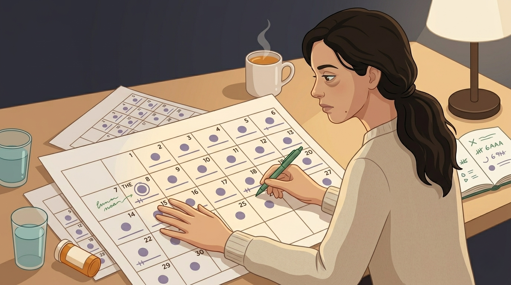
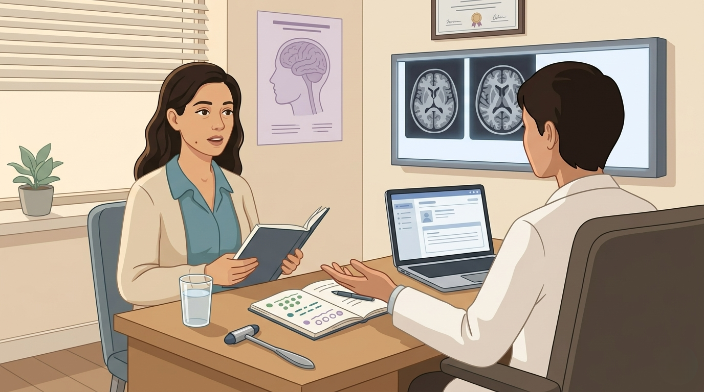

By Rustam Iuldashov
30 years lived experience with chronic migraine | Sources: 25 peer-reviewed references including Cephalalgia (meta-analysis n>1,000), Neurology, The Journal of Headache and Pain (2025), Current Neurology and Neuroscience Reports, ICHD-3 | Last updated: May 2026
Medical Review: This content is based on 25 peer-reviewed sources including Cephalalgia, Neurology, Headache: The Journal of Head and Face Pain, The Journal of Headache and Pain, Current Neurology and Neuroscience Reports, Current Pain and Headache Reports, and the International Classification of Headache Disorders, 3rd edition (ICHD-3).
Important Notice: This article is for informational purposes only and does not replace professional medical advice. NDPH is a diagnosis that requires neurologist evaluation with neuroimaging to exclude secondary causes — do not self-diagnose or adjust medications based on this article alone.
Key Takeaways
- NDPH is a real, ICHD-3 defined headache disorder with a clearly remembered onset that becomes daily within twenty-four hours and persists more than three months [2]
- About half of cases have an identifiable trigger — most commonly a preceding infection, severe stress, or surgical procedure involving intubation. Post-COVID NDPH is now a recognized variant [7][11]
- Migrainous features are common but should not override the diagnosis; chronic migraine and NDPH have different temporal profiles and different prognoses [3][18]
- Three prognostic subforms exist — self-limiting, persisting, and relapsing-remitting — and which one you have can only be known with time [17]
- No FDA-approved treatment exists, but phenotype-matched preventives, early steroids or nerve blocks in post-infectious cases, and CGRP monoclonal antibodies all have evidence for a subset of patients [4][18]
- If you can pinpoint your start date, raise NDPH with your neurologist explicitly — the diagnosis changes the workup, the expectations, and sometimes the treatment plan
The Tuesday Problem
Most people with chronic migraine cannot tell you when their head pain began. It crept in. Episodic at first, then a few days a month, then most days, then almost every day. The story has no first chapter.
Some people can name the exact date. They remember the weather. They remember what they were doing. They remember that the pain arrived in a single moment and never left. One day, no headache. The next day, headache. The day after that, headache. Every day since.
This is New Daily Persistent Headache. NDPH. One of the strangest, most under-diagnosed, most clinically frustrating disorders in all of headache medicine. [1] If you can pinpoint your start date — if you remember the Tuesday — you may have been misdiagnosed for years.
What NDPH Actually Is
The International Classification of Headache Disorders, third edition, defines NDPH precisely: a persistent headache, daily from its onset, with a distinct and clearly remembered start that becomes continuous within twenty-four hours and persists for more than three months. [2] The pain itself lacks signature features — it can resemble migraine, tension-type headache, or both. [2]
That last phrase is the trap. About 71% of NDPH patients have migrainous features — throbbing, nausea, photophobia, phonophobia — making the disorder indistinguishable from chronic migraine on a bad day. [3] The only reliable difference is the calendar. Chronic migraine builds. NDPH arrives.
Prevalence sits between 0.03% and 0.1% of the general population, with adolescents and children disproportionately affected — up to 35% of pediatric chronic daily headache in tertiary centers is NDPH. [1][4] In Western populations, women in their teens and twenties carry the highest risk. [1]

The Headache Doctors Hate to Diagnose
NDPH is a diagnosis of exclusion. Before a neurologist can name it, they have to rule out everything else that can produce daily headache from a clear onset: cerebrospinal fluid leaks, intracranial hypertension, venous sinus thrombosis, giant cell arteritis, cervical artery dissection, sphenoid sinusitis. [5] Most of these require MRI, often MRV, sometimes a lumbar puncture. The workup is invasive, expensive, and usually negative.
⚠️ When a New Daily Headache Is a Medical Emergency
A clearly remembered headache onset is the diagnostic hallmark of NDPH — but the same temporal pattern can also signal a secondary cause that needs urgent evaluation. Go to an emergency department or call emergency services immediately if your sudden-onset daily headache is accompanied by any of the following:
- Thunderclap onset — pain peaking to maximum intensity within seconds to one minute (possible subarachnoid hemorrhage or reversible cerebral vasoconstriction syndrome)
- Fever, neck stiffness, or confusion (possible meningitis or encephalitis)
- New focal neurological symptoms — weakness, numbness, vision loss, speech difficulty, or seizure
- Headache that worsens with lying flat or with standing up (possible CSF pressure abnormality)
- Papilledema or new visual disturbance noticed by you or by an examining clinician
- Headache after recent head or neck trauma, including whiplash or chiropractic manipulation
- New daily headache after age 50 with jaw pain, scalp tenderness, or vision changes (possible giant cell arteritis)
NDPH is a diagnosis made only after secondary causes are excluded. If you have any red-flag symptoms, do not wait for a neurology appointment — seek emergency care.
Then comes the harder problem. Even after the imaging is clean and the diagnosis fits, no FDA-approved treatment exists. No large randomized controlled trials exist. [4] The 2023 systematic review pooling data from over a thousand patients found primary NDPH to be one of the most treatment-resistant primary headache disorders documented. [1] The median patient at a specialist clinic has tried more than ten preventives before being referred. [6]
Some neurologists skip the label entirely. They diagnose chronic migraine, prescribe accordingly, and hope. The patient leaves with a name that doesn’t quite fit their illness — and a treatment plan calibrated for a different disease.
The Three T’s: What Triggers It
The most thorough trigger analysis comes from Todd Rozen’s 2016 clinic-based study of 97 NDPH patients. [7] About half — 53% — could identify no precipitating event. The headache simply began. Of those who could name a trigger:
- 22% reported an infection or flu-like illness in the days or weeks before onset
- 9% reported a stressful life event (bereavement, divorce, job loss)
- 9% reported a recent surgical procedure — and every one of them had been intubated
- 7% reported other triggers, including hormonal changes, chemical exposure, vaccination, or SSRI withdrawal [7]
The intubation pattern matters. Rozen and others have proposed that a subset of NDPH cases may have a cervicogenic origin — mechanical injury to the upper cervical spine during airway management, producing persistent pain through convergence of cervical and trigeminal afferents. [8] A 2006 physical exam study found cervical spine hypermobility in eleven of twelve NDPH patients. [9] Newer work has linked NDPH more broadly to connective tissue disorders such as Ehlers-Danlos syndrome and hypermobility spectrum disorders — a finding consistent with the broader neck-migraine connection. [10]
Since 2020, the list has acquired a new entry. Multiple case series have now documented NDPH-phenotype headaches arising in the wake of acute COVID-19 infection, sometimes weeks after the acute illness resolved. [11]
The Inflammation Hypothesis
If a unifying biological story exists for NDPH, the leading candidate is neuroinflammation. [12] Early cerebrospinal fluid studies in NDPH patients found elevated TNF-α — a pro-inflammatory cytokine known to sensitize trigeminal pain pathways and sustain chronic pain states. [13][14] The pattern matches what is seen after immune activation by infection, surgery, or severe stress that fails to switch off.
This is why post-infectious NDPH has been treated, in refractory cases, with doxycycline, a tetracycline antibiotic with TNF-α inhibitory properties. [4] It is also why corticosteroids occasionally produce dramatic short-term improvement: they suppress the inflammatory cascade that may be sustaining the pain.
Neuroinflammation, though, is a hypothesis — not a confirmed mechanism. A 2025 case-control study of serum cytokines in NDPH found inflammatory differences from healthy controls but no signature that cleanly distinguished NDPH from chronic migraine. [15] The honest summary: something inflammatory appears to be involved, in some patients, sometimes.
Subtypes That Matter for Prognosis
Vanast’s original 1986 description of NDPH was optimistic: 78% of patients were pain-free within twenty-four months without targeted treatment. [16] Subsequent studies, drawing from specialty clinics rather than primary care, painted a darker picture. But the original observation was not wrong. NDPH splits into three prognostic subforms: [17]
- Self-limiting NDPH — the headache gradually fades, often within months to two years, sometimes without targeted treatment
- Persisting NDPH — the headache continues for years, refractory to most preventives, and is the form most often seen in headache specialty clinics
- Relapsing-remitting NDPH — periods of continuous headache alternate with periods of relief [17]
You cannot tell at onset which subtype you have. Time is the only test. But the distinction matters clinically: a patient three months in should not be told the condition is hopeless. A patient three years in should not be told it will resolve on its own.
Why Treating It Like Chronic Migraine Sometimes Works
When NDPH carries migrainous features, the standard approach is to treat it like chronic migraine. Preventives first (topiramate, nortriptyline, candesartan, beta-blockers), then onabotulinumtoxinA, then CGRP monoclonal antibodies. [4]
The results are sobering. A 2025 prospective study of CGRP mAbs in treatment-refractory NDPH found that roughly one in four patients achieved meaningful benefit — substantially lower than the response rate in chronic migraine. [18] The authors concluded that NDPH cannot be assumed equivalent to chronic migraine, and that new treatment options are needed. [18] A 25% response rate is not nothing. Individual case reports have documented complete remission on erenumab maintained for two years or longer. [19]
If your headache carries migraine features, the migraine treatment ladder is worth climbing. Just go in knowing the response rate is lower than what your doctor may expect.
What to Do When Your Migraine Doesn’t Behave Like a Migraine
If you can pinpoint the day your headache started, raise NDPH explicitly with your neurologist. The diagnosis changes the workup and the expectations.

A Reasonable Approach to Take to Your Neurologist
- Get the dating right. A clearly remembered onset within twenty-four hours is the single most useful piece of history. Write it down.
- Push for the exclusion workup. MRI brain with and without contrast, MRV, and depending on presentation, lumbar puncture or upright/Trendelenburg testing for CSF pressure abnormalities. [4]
- Identify any trigger. Recent infection, surgery with intubation, severe stress, COVID, or new medication can guide subtype-targeted treatment. [7]
- Try phenotype-matched preventives. If migrainous, climb the chronic migraine ladder. If tension-type, the tension-type ladder. Be patient — at least eight to twelve weeks at a therapeutic dose for each trial.
- Consider an early course of steroids or nerve blocks, particularly in post-infectious or new-onset cases. Some patients respond to early anti-inflammatory treatment. [4]
- Address the upstream factors. Sleep, diet, hydration, caffeine and alcohol intake, mental health support. None are cures. All reduce the noise around the signal.
The Frame That Helps
If you have NDPH, you will likely encounter doctors who do not believe in the diagnosis, treatments that do not work, and a research literature that is genuinely thin. This is not your imagination. It is the state of the field.
What helps is holding two things at once. The first: the headache is real, the mechanism is partly understood, and you are not malingering or catastrophizing. The second: the prognostic picture is more variable than the worst-case stories suggest. Self-limiting cases exist. Late remissions exist. Targeted treatments occasionally work spectacularly.
You remember the Tuesday. The doctors who matter will too.
Key Takeaways
- NDPH is a real, ICHD-3 defined headache disorder with a clearly remembered onset that becomes daily within twenty-four hours and persists more than three months [2]
- About half of cases have an identifiable trigger — most commonly a preceding infection, severe stress, or surgical procedure involving intubation. Post-COVID NDPH is now a recognized variant [7][11]
- Migrainous features are common but should not override the diagnosis; chronic migraine and NDPH have different temporal profiles and different prognoses [3][18]
- Three prognostic subforms exist — self-limiting, persisting, and relapsing-remitting — and which one you have can only be known with time [17]
- No FDA-approved treatment exists, but phenotype-matched preventives, early steroids or nerve blocks in post-infectious cases, and CGRP monoclonal antibodies all have evidence for a subset of patients [4][18]
- If you can pinpoint your start date, raise NDPH with your neurologist explicitly — the diagnosis changes the workup, the expectations, and sometimes the treatment plan
⚕️ Important Medical Disclaimer
This article is for informational and educational purposes only and does not constitute medical advice, diagnosis, or treatment. The author, Rustam Iuldashov, is not a licensed physician, neurologist, or headache specialist. He is a patient advocate with 30 years of personal experience living with chronic migraine.
All clinical claims in this article are sourced from peer-reviewed research published in indexed medical journals. Study designs and sample sizes are noted in the references section where applicable.
NDPH is a diagnosis of exclusion that requires comprehensive neurological evaluation, including neuroimaging, to rule out secondary causes that can produce identical symptoms. Always consult a qualified healthcare provider for questions about your individual health, headache treatment, or medication decisions. The medications discussed in this article — including off-label use of preventives, corticosteroids, CGRP monoclonal antibodies, nerve blocks, and other interventions — should never be initiated, modified, or stopped without consulting a licensed clinician familiar with your full medical history.
If you experience any of the red-flag symptoms described in the emergency box above — particularly a sudden, severe (thunderclap) headache, fever with neck stiffness, focal neurological deficits, or new headache after head or neck trauma — seek emergency medical care immediately. This content was last reviewed for accuracy in May 2026.
References
- Cheema S, Mehta D, Ray JC, Hutton EJ, Matharu MS. “New daily persistent headache: A systematic review and meta-analysis.” Cephalalgia, 43(5):3331024231168089 (2023). doi:10.1177/03331024231168089. Study design: Systematic review and meta-analysis. n>1,000 pooled.
- Headache Classification Committee of the International Headache Society. “The International Classification of Headache Disorders, 3rd edition (ICHD-3).” Cephalalgia, 38(1):1–211 (2018). doi:10.1177/0333102417738202. Study design: International expert consensus / classification.
- Nagaraj K, Kim H, Tepper SJ, et al. “Comparison and predictors of chronic migraine vs. new daily persistent headache presenting with a chronic migraine phenotype.” Headache: The Journal of Head and Face Pain, 62(7):828–838 (2022). doi:10.1111/head.14362. Study design: Retrospective comparative cohort.
- Riddle EJ, Smith JH. “New Daily Persistent Headache: a Diagnostic and Therapeutic Odyssey.” Current Neurology and Neuroscience Reports, 19:21 (2019). doi:10.1007/s11910-019-0936-9. Study design: Narrative review.
- Tyagi A. “New daily persistent headache.” Annals of Indian Academy of Neurology, 15(Suppl 1):S62–S65 (2012). doi:10.4103/0972-2327.100011. Study design: Clinical review.
- Lagrata S, Cheema S, Watkins L, et al. “Long-Term Outcomes of Occipital Nerve Stimulation for New Daily Persistent Headache With Migrainous Features.” Neuromodulation, 24(6):1093–1099 (2021). doi:10.1111/ner.13316. Study design: Retrospective cohort. n=9 (median 11 previous failed treatments).
- Rozen TD. “Triggering Events and New Daily Persistent Headache: Age and Gender Differences and Insights on Pathogenesis-A Clinic-Based Study.” Headache: The Journal of Head and Face Pain, 56(1):164–173 (2016). doi:10.1111/head.12707. Study design: Retrospective clinic-based cohort. n=97.
- Peng KP, Rozen TD. “Update in the understanding of new daily persistent headache.” Cephalalgia, 43(2):03331024221146314 (2023). doi:10.1177/03331024221146314. Study design: Structured narrative review.
- Rozen TD, Roth JM, Denenberg N. “Cervical spine joint hypermobility: a possible predisposing factor for new daily persistent headache.” Cephalalgia, 26(10):1182–1185 (2006). doi:10.1111/j.1468-2982.2006.01187.x. Study design: Case series with physical exam. n=12.
- Henderson FC, Rosenbaum R, Narayanan M, et al. “Headache disorders in patients with Ehlers-Danlos syndromes and hypermobility spectrum disorders.” Frontiers in Neurology, 15:1460352 (2024). doi:10.3389/fneur.2024.1460352. Study design: Narrative review of clinical literature.
- Magdy R, Eid RA, Hassan M, et al. “Post-COVID-19 headache- NDPH phenotype: a systematic review of case reports.” Frontiers in Pain Research, 5:1376506 (2024). doi:10.3389/fpain.2024.1376506. Study design: Systematic review of case reports.
- Yamani N, Olesen J. “New daily persistent headache: a systematic review on an enigmatic disorder.” The Journal of Headache and Pain, 20(1):80 (2019). doi:10.1186/s10194-019-1022-z. Study design: Structured systematic review.
- Rozen TD, Swidan SZ. “Elevation of CSF tumor necrosis factor alpha levels in new daily persistent headache and treatment refractory chronic migraine.” Headache: The Journal of Head and Face Pain, 47(7):1050–1055 (2007). doi:10.1111/j.1526-4610.2006.00722.x. Study design: CSF biomarker case-control. n=38.
- Zhang Y, Parisien M, Diatchenko L. “Tumor Necrosis Factor and Interleukin Modulators for Pathologic Pain States: A Narrative Review.” Pain and Therapy, 13(3):481–507 (2024). doi:10.1007/s40122-024-00603-8. Study design: Narrative review of preclinical and clinical data.
- Cheema S, Stubberud A, Tronvik E, et al. “Serum cytokines in primary new daily persistent headache and chronic migraine: a case control study.” The Journal of Headache and Pain, 26:78 (2025). doi:10.1186/s10194-025-02016-0. Study design: Prospective case-control. n=120 (40 per group).
- Vanast WJ. “New daily persistent headaches: definition of a benign syndrome.” Headache, 26:317 (1986). Study design: Original clinical description.
- Robbins MS, Grosberg BM, Napchan U, Crystal SC, Lipton RB. “Clinical and prognostic subforms of new daily-persistent headache.” Neurology, 74(17):1358–1364 (2010). doi:10.1212/WNL.0b013e3181dad5de. Study design: Retrospective clinic-based cohort. n=71.
- Cheema S, Mehta D, Lagrata S, Matharu MS. “Calcitonin gene-related peptide monoclonal antibody treatment for new daily persistent headache.” The Journal of Headache and Pain, 26:135 (2025). doi:10.1186/s10194-025-02062-y. Study design: Prospective open-label cohort comparing NDPH vs CM response.
- Watanabe K, Suzuki S. “Complete Resolution of New Daily Persistent Headache With Migraine-Like Features Following Erenumab Treatment: A Case Report.” Cureus, 17(5):e84529 (2025). doi:10.7759/cureus.84529. Study design: Single case report. n=1.
- Evans RW. “Primary non-continuous new daily persistent headache: Seven cases and proposed diagnostic criteria.” Cephalalgia Reports, 4:2515816321998349 (2021). doi:10.1177/2515816321998349. Study design: Case series. n=7.
- Riddle EJ, Smith JH. “New Daily Persistent Headache (NDPH): Unraveling the Complexities of Diagnosis, Pathophysiology, and Treatment.” Current Pain and Headache Reports, 27(10):395–401 (2023). doi:10.1007/s11916-023-01161-y. Study design: Narrative clinical review.
- Cheema S, Stubberud A, Rantell K, et al. “Phenotype of new daily persistent headache: subtypes and comparison to transformed chronic daily headache.” The Journal of Headache and Pain, 24:109 (2023). doi:10.1186/s10194-023-01639-5. Study design: Retrospective comparative cohort. n=366 NDPH vs 696 T-CDH.
- Rozen TD. “New daily persistent headache (NDPH) triggered by a single Valsalva event: A case series.” Cephalalgia, 39(6):785–791 (2019). doi:10.1177/0333102418806869. Study design: Clinical case series. n=7.
- Murphy C, Hameed S. “Chronic Headaches.” StatPearls, StatPearls Publishing (2023). Study design: Clinical reference chapter. n=N/A.
- Rozen TD. “The Three T’s of NDPH (How Clinical Observations Have Led to Improved Treatment Outcomes).” Headache: The Journal of Head and Face Pain, 59(9):1401–1406 (2019). doi:10.1111/head.13624. Study design: Clinical observation review.

How We Create Content
- Peer-reviewed sources only. We cite research from Cephalalgia, Neurology, Headache: The Journal of Head and Face Pain, The Journal of Headache and Pain, Current Neurology and Neuroscience Reports, Current Pain and Headache Reports, Frontiers in Neurology, Frontiers in Pain Research, and the International Classification of Headache Disorders (ICHD-3).
- Large-sample evidence prioritized. Key claims reference a 2023 systematic review and meta-analysis pooling over 1,000 NDPH patients, a 2025 prospective case-control study of serum cytokines (n=120), a 2023 phenotype comparison study (n=366 NDPH vs n=696 transformed chronic daily headache), and a 2025 prospective CGRP mAb cohort.
- Source transparency. All 25 references are numbered and verifiable. DOI links provided where available.
- Experience + Science. 30 years of personal migraine experience combined with peer-reviewed evidence on NDPH diagnostic criteria, triggers, neuroinflammation, prognosis, and pharmacological treatment.
- Regular updates. We review articles when significant new research emerges. Next scheduled review: November 2026.
- No conflicts of interest. We receive no funding from pharmaceutical companies, medical device manufacturers, or any commercial entity with interest in headache treatment.
Pinpoint the Day. Track the Pattern. Bring the Data.
Migraine Companion lets you record the exact onset date of any headache disorder, log daily severity, identify triggers, and generate clinician-ready reports — the kind of evidence that turns a fifteen-minute neurology appointment into a productive one.
Last reviewed: May 2026
Next scheduled review: November 2026